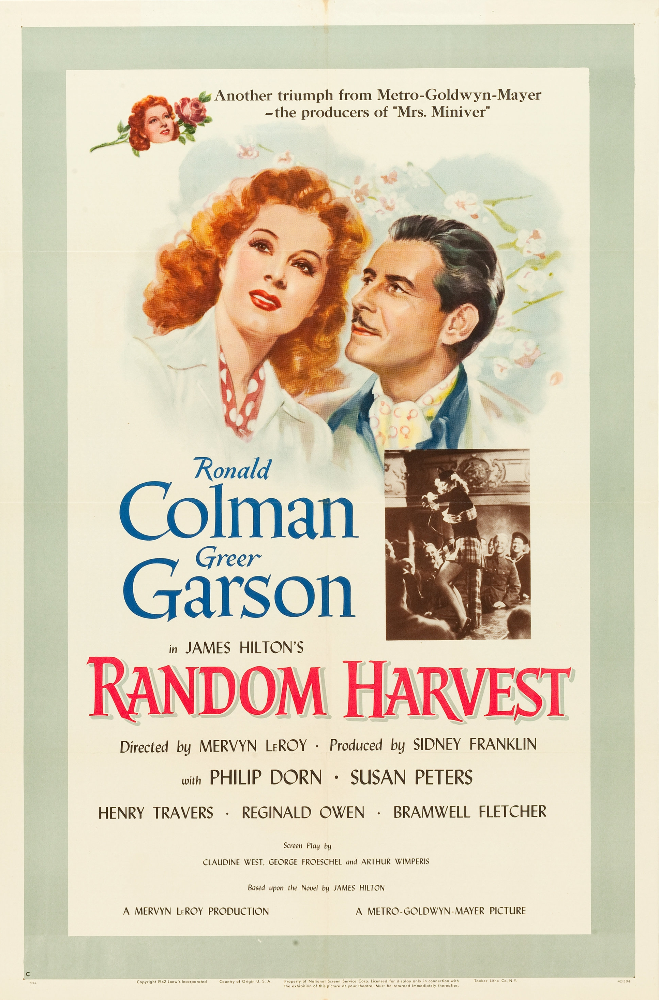

Random Harvest
15th Academy Awards
(Oscars 1943)
7 Nominations, 0 Awards
| Nominations | ||
|---|---|---|
| Category | Nominees | Result |
| Outstanding Motion Picture | Metro-Goldwyn-Mayer | Nominated |
| Actor | Ronald Colman | Nominated |
| Actress in a Supporting Role | Susan Peters | Nominated |
| Directing | Mervyn LeRoy | Nominated |
| Writing (Screenplay) | Arthur Wimperis, Claudine West, and George Froeschel | Nominated |
| Art Direction (Black-and-White) | Cedric Gibbons, Edwin B. Willis, Jack Moore, and Randall Duell | Nominated |
| Music (Music Score of a Dramatic or Comedy Picture) | Herbert Stothart | Nominated |